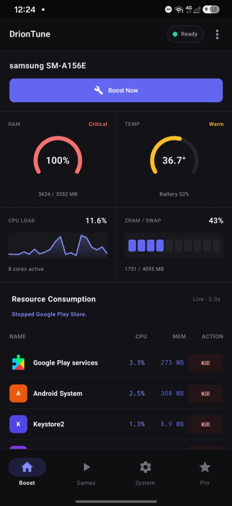
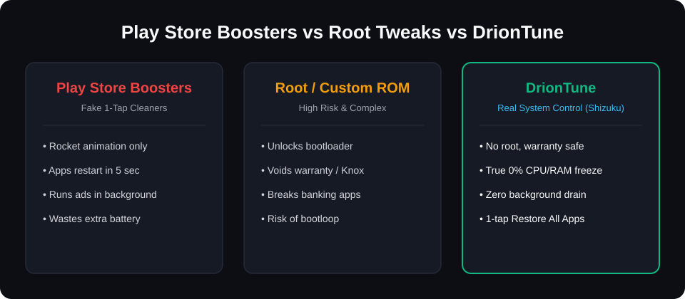
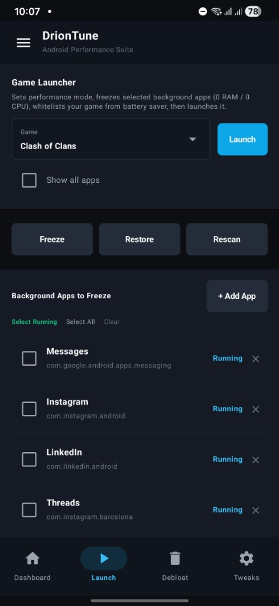
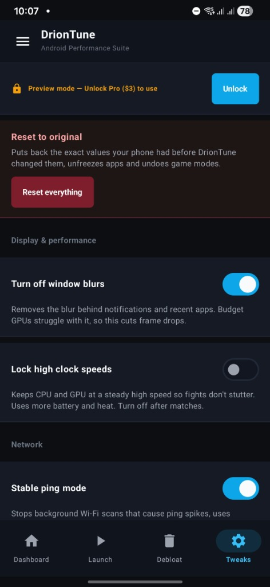
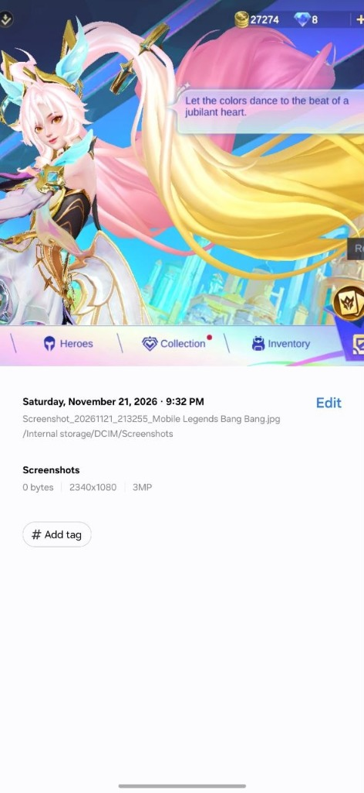
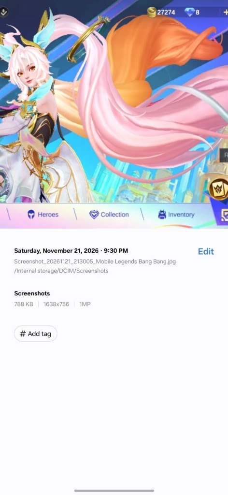
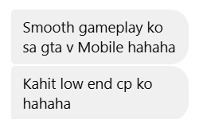
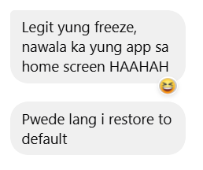

Install Shizuku & DrionTune
Download the free Shizuku app from Google Play and install the DrionTune APK from this page.
Built for 3 GB to 6 GB phones that lag in MLBB, CODM, PUBG, and Genshin. Pause background apps so they use zero RAM and zero CPU while you play—then restore everything in one tap.

DrionTune uses the free Shizuku helper app so it can safely pause heavy apps without rooting your phone.
Download the free Shizuku app from Google Play and install the DrionTune APK from this page.
Turn on Wireless Debugging in phone settings, enter the 6-digit code in Shizuku, and tap Start.
Pick your game, freeze noisy background apps, and play smoother. Tap Restore when you finish.
Play Store "RAM boosters" only play a rocket animation while apps restart 5 seconds later. DrionTune actually pauses them.

DrionTune stays completely off while you play so it never steals CPU or RAM from your game.
See real-time CPU load, RAM usage, and battery heat at a glance. Tap 1-Click Fix Lag before a match to clear heavy background apps slowing your phone down.
Pick your game and select apps like Facebook, TikTok, or Shopee to freeze while you play. Your accounts stay logged in—tap Restore All Apps after your match and everything comes right back.

Hide unwanted brand and carrier apps that run silently in the background. Everything is reversible in one tap, so you never risk bricking your phone.

Turn off laggy window blurs, stop background Wi-Fi scans that cause ping spikes, disable Samsung GOS throttling, adjust Samsung RAM Plus, or bypass thermal drops when using a phone cooler. Includes a 1-tap Reset Everything button.

Now live—bringing real screen resolution scaling, direct Shizuku shell fixes for Realme/Xiaomi/Infinix/Tecno, full game auto-detection, and honest Pro tools.
Lower screen render load by up to 75% on every game (MLBB, CODM, PUBG, Genshin) with a 15-second auto-revert timer and 1-tap Reset Resolution.
Direct Shizuku shell mode bypasses slow/crashing UserService binds on MediaTek, Transsion, 32-bit/3GB RAM, and Android 11–16 phones.
Auto-detects all Android games (with + Add missing game in the picker), adds FPS cap/frame pacing & shader pre-compile to cut stutter, plus a zero-RAM Restore notification.
Keep 90/120Hz displays from dropping to 60Hz (does not bypass in-game 60 FPS caps), throttle background apps without hiding icons, search & remove bloat, and save per-game profiles.
Actual gallery info from Mobile Legends after applying 70% Screen Resolution Scale—51% fewer pixels rendered per frame while keeping crisp UI.


Unedited Messenger feedback from players using DrionTune (names cropped for privacy).

“Smooth gameplay on GTA V Mobile, even on my low-end phone.”

“The freeze is legit—frozen apps disappear from the home screen and restore right back to default.”
Use DrionTune free on your phone, unlock Pro forever for $1.99, or tune from Windows PC without Shizuku.
Everything you need for daily lag fixes and smoother gaming.
Full phone control forever with zero ads.
Stuck on Shizuku? Tune your phone directly from Windows 10/11.
DrionTune.exeNo credit card or PayPal? Use the GCash / Maya Support Form or email gwenny252@gmail.com. Windows SmartScreen note: on first launch of PC Edition, click More info → Run anyway.
Quick answers on safety, Shizuku, and upgrading to Pro.
Yes. DrionTune never roots your phone or unlocks your bootloader. Banking apps, GCash, system updates, and your warranty stay completely safe.
Android blocks normal apps from pausing other apps or changing performance settings. Shizuku is a free helper app that gives DrionTune safe permission without root. Read the 2-minute Setup Guide & Step 3 fixes, or use DrionTune PC Edition without Shizuku.
No. Freezing only pauses apps while you game so they stop using RAM and CPU. Tap Restore All Apps afterward and your apps, logins, and notifications come right back.
No. Core Android system apps are protected, and bloatware is only hidden for your user profile—you can restore any app in one tap.
Pay once on Gumroad to receive a license key. Paste it inside DrionTune's Pro dialog to permanently unlock Bloatware Remover, Tweaks, and ad-free mode—no monthly fee.
Download DrionTune free and set up in under two minutes.